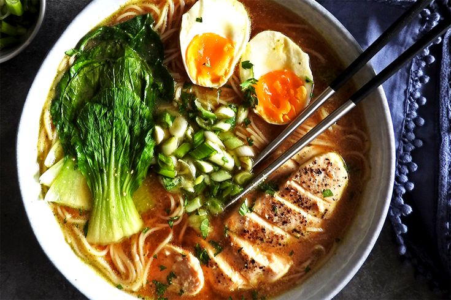

Chicken Miso Ramen

Chicken Miso Ramen is a comforting and flavorful Japanese noodle soup, featuring a rich broth made from miso paste, tender chicken pieces, and a variety of fresh toppings. This ramen is characterized by its savory umami flavor, silky noodles, and a blend of textures and tastes from ingredients like soft-boiled eggs, green onions, nori, and sweet corn. Perfect for a cozy meal, Chicken Miso Ramen offers a balanced combination of protein, vegetables, and noodles in a deliciously aromatic broth.
Ingredients
For the Broth:
- 4 cups chicken broth
- 2 cups water
- 2 tablespoons white miso paste
- 2 tablespoons red miso paste
- 1 tablespoon soy sauce
- 1 tablespoon mirin
- 1 tablespoon sesame oil
- 2-3 garlic cloves, minced
- 1-inch piece of ginger, minced
- 1 small onion, finely chopped
For the Chicken:
- 2 chicken breasts or thighs
- Salt and pepper to taste
- 1 tablespoon soy sauce
- 1 tablespoon mirin
- 1 tablespoon vegetable oil
For the Ramen:
- 4 servings of ramen noodles
- 2 soft-boiled eggs, halved
- 1 cup sweet corn kernels
- 1 cup baby spinach or bok choy
- 2 green onions, finely sliced
- 1 sheet nori, cut into strips
- 1 tablespoon toasted sesame seeds
- 1 tablespoon chili oil
Cooking Steps
-
Prepare the Chicken:
- Season the chicken breasts or thighs with salt and pepper.
- In a bowl, mix 1 tablespoon soy sauce and 1 tablespoon mirin. Marinate the chicken in this mixture for at least 15 minutes.
- Heat 1 tablespoon vegetable oil in a skillet over medium heat. Add the marinated chicken and cook until fully cooked and golden brown on both sides, about 6-8 minutes per side.
- Remove the chicken from the skillet and let it rest. Once cool, slice the chicken into thin strips.
-
Prepare the Broth:
- In a large pot, heat 1 tablespoon sesame oil over medium heat.
- Add the minced garlic, ginger, and chopped onion. Sauté until the onion becomes translucent and fragrant.
- Add the chicken broth and water to the pot. Bring to a boil, then reduce the heat to low and let it simmer.
- In a small bowl, combine the white miso paste and red miso paste with a ladleful of the hot broth. Stir until the miso paste is dissolved, then return this mixture to the pot.
- Add 1 tablespoon soy sauce and 1 tablespoon mirin to the pot. Stir well and let the broth simmer for another 10-15 minutes to develop the flavors.
-
Cook the Noodles:
- While the broth is simmering, cook the ramen noodles according to the package instructions. Drain and set aside.
-
Prepare the Soft-Boiled Eggs:
- Bring a small pot of water to a boil. Gently add the eggs and cook for 6-7 minutes for a soft-boiled yolk.
- Transfer the eggs to an ice bath to stop the cooking process. Once cool, peel the eggs and slice them in half.
-
Assemble the Ramen Bowls:
- Divide the cooked ramen noodles into four bowls.
- Ladle the hot miso broth over the noodles in each bowl.
- Top each bowl with sliced chicken, half a soft-boiled egg, sweet corn, spinach or bok choy, green onions, and nori strips.
- Sprinkle with toasted sesame seeds and add a drizzle of chili oil if desired.